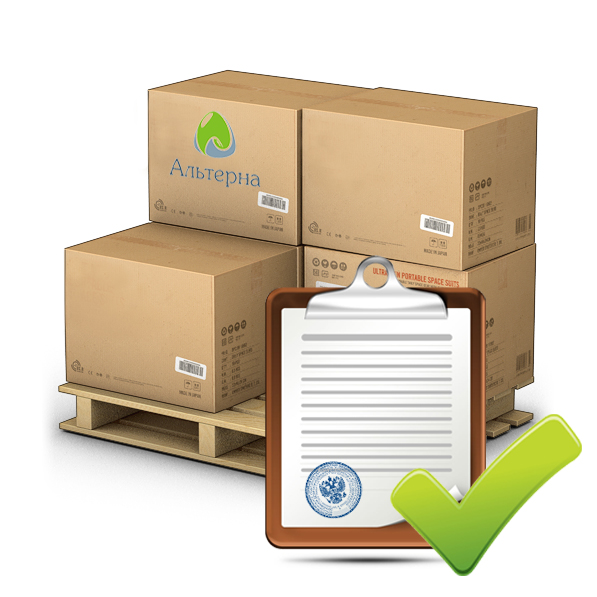
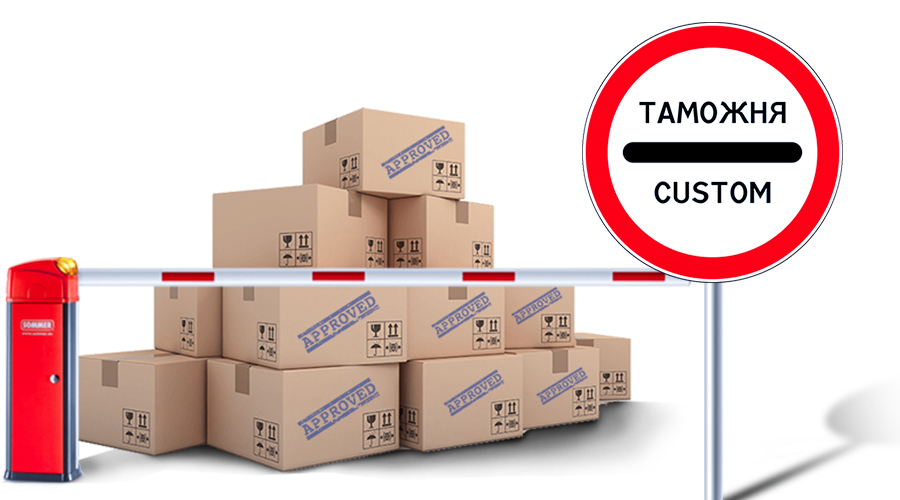

доставка груза из европы, америки, китая от двери до двери по всей россии
автомобильным, морским и авиатранспортом

ТАМОЖЕННОЕ ОФОРМЛЕНИЕ ПОД КЛЮЧ
наши услуги
наличие складов хранения в европе

таможенное оформление под ключ
получение разрешительных документов
консультации по вопросам таможенного оформления
международные перевозки
Авиаперевозки грузов
Авиаперевозки грузов это приоритетное направление деятельности компании «Гранд Логистик». В случае необходимости срочной доставки груза авиаперевозка является наиболее удобным вариантом. Специалисты нашей компании обеспечат расчет оптимального маршрута Вашего груза по наиболее выгодной цене.
Грузовые авиаперевозки популярны ввиду ряда преимуществ по сравнению с доставкой грузов другими видами транспорта. Прежде всего, авиаперевозки грузов – это максимально оперативный способ доставки. Особенно актуальны авиа перевозки в том случае, если предполагается транспортировка скоропортящихся грузов. Доставка грузов самолетом в кратчайшие сроки возможна практически на любые расстояния, и этот фактор также делает авиаперевозки незаменимой услугой при организации международной доставки грузов.
Грузовые авиаперевозки не имеют существенных ограничений по объему и весу груза. Наконец, доставка грузов самолетом - это максимальная безопасность, так как уровень охранных мероприятий в аэропортах значительно выше, чем на железной дороге, автомобильном транспорте или морских терминалах. Единственный недостаток, которым обладают грузовые авиаперевозки - относительно высокая стоимость – нивелируемая скоростью и качеством услуги. Именно поэтому доставка грузов самолетом сегодня выглядит наиболее предпочтительным вариантом транспортировки для многих компаний, работающих как в России, так и за рубежом.
Компания «Гранд Логистик» готова предложить оптимальные цены и условия на авиаперевозки грузов по России и миру, и высокий уровень сервиса при обслуживании корпоративных клиентов. Предлагая авиаперевозки грузов, наша компания ориентируется на максимальное удовлетворение потребностей клиентов в области оперативной, надежной и безопасной транспортировки.
Заказывая грузовые авиаперевозки у нас, Вы всегда можете рассчитывать на целый ряд дополнительных преимуществ, таких как:
Конкурентные цены на грузовые авиаперевозки по России и миру. Доставка грузов самолетом организовывается нами в тесном партнерстве с ведущими авиакомпаниями мира, что дает возможность существенно снизить цены и предложить клиентам качественную услугу по конкурентной стоимости;
Индивидуальный подход. Заказывая авиаперевозки по России и миру у нас, Вы можете рассчитывать на профессиональную организацию транспортировки нашими специалистами, учитывая все Ваши критерии и пожелания;
Широкий спектр дополнительных услуг. Авиаперевозки грузов – не единственное направление нашей деятельности, поэтому Вы всегда можете рассчитывать на комплексный подход к организации транспортировки товаров любой сложности. Помимо авиаперевозки по России, мы также предлагаем мультимодальные перевозки. А при перевозке грузов из России или в Россию из другой страны – мы предлагаем Вам воспользоваться нашими услугами по таможенному оформлению груза.
Таможенное оформление
Мы предлагаем нашим клиентам комплекс таможенных услуг, который включает в себя не только таможенное оформление, но и консультирование ВЭД, помощь в подготовке необходимых для таможенного оформления документов, разрешений государственных органов и сертификатов соответствия. Мы работаем с компаниями любых форм организации и собственности и с любыми объемами заказов, как с крупными компаниями на основе долгосрочных контрактов, так и в рамках одноразового сотрудничества или консультации.
Мы предлагаем:
Услуги по импортно-экспортным операциям;
Предварительный расчет таможенных платежей и сборов;
Консультирование и помощь в подготовке необходимых документов для оформления декларации на товары;
Услуги по оформлению декларации на товары;
Услуги по определению таможенной стоимости;
Услуги по разгрузке/выгрузке грузов на СВХ ЗАО «РОСТЭК-Северо-Запад»;
Услуги по разгрузке/выгрузке грузов на ЗАО «ГТП»;
Услуги по хранению грузов на СВХ;
Услуги по терминальной обработке грузов на ЗАО «ГТП»;
Консультации по общим и специальным вопросам таможенного оформления;
Помощь в решении спорных вопросов;
Услуги по оформлению ключа ЭП;
Услуги по получению сертификатов ключа ЭП;
Консультирование по вопросам электронного декларирования.
Наши специалисты по таможенному оформлению обладают отличными знаниями законодательства ВЭД, которое регулярно подвергается дополнениям и изменениям. Сотрудники компании «Гранд Логистик» успешно справляются с самыми сложными и нестандартными задачами, ведь они всегда следят за изменениями в законодательстве и повышают свой квалификационный уровень. Стоимость услуг по таможенному оформлению товаров выясняется в каждом случае индивидуально, ведь данный процесс всегда подразумевает огромное количество условий и формальностей.
Электронное декларирование
Электронное таможенное декларирование товаров и грузов разработано Всемирной торговой организацией (ВТО) и является составляющими новых рамочных стандартов, внедряемых для обеспечения безопасности всех внешнеторговых операций, и по содействию торговле в целом. Поскольку одной из задач курса России на ее интеграцию в мировую экономику является вступление в ВТО, процесс электронного декларирования товаров в настоящее время активно развивается. Перевод в электронный вид процесса декларирования товаров и грузов является частью федеральной целевой программы "Электронная Россия на 2002-2010 годы". В рамках осуществления программы переноса таможенного оформления на границу РФ использование системы электронного декларирования становится особенно актуальной. Система электронного декларирования позволяет проводить таможенное оформление, не посещая таможенный пункт, формализовать и ускорить большинство процедур таможенного контроля и оформления, а также значительно экономит время.
Система электронного декларирования ФТС России как информационный сервис, доступный для участников ВЭД, функционирует с 2008 года на основании приказа ФТС от 24 января 2008 года № 52 «О внедрении информационной технологии представления таможенным органам сведений в электронной форме для целей таможенного оформления товаров, в том числе с использованием международной ассоциации сетей «Интернет».
Получение ключевых средств ЭП
Для получения услуг по использованию информационной системы с целью предоставления сведений в электронной форме таможенным органам для электронного декларирования товаров необходимо наличие у работников Заказчика, передающих такие сведения, ключевых средств электронной подписи (далее – ЭП), сформированных в головном удостоверяющем центре системы ведомственных удостоверяющих центров таможенных органов (далее - СВУЦТО).
В связи с вступлением в силу с 20 февраля 2012 года приказа Федеральной таможенной службы РФ от 25 октября 2011 года № 2187 с 15 февраля 2012 года заявки на получение сертификатов ключей проверки электронной подписи будут приниматься только по новой форме.
К заявке на получение сертификатов ключей проверки электронной подписи прикладываются: Заполненный трёхсторонний Договор (в трёх экземлпярах) и заверенные копии документов:
основной документ, удостоверяющий личность пользователя средства электронной подписи (СрЭП);
страховое свидетельство государственного пенсионного страхования пользователя СрЭП;
документ, подтверждающий факт внесения записи о юридическом лице в Единый государственный реестр юридических лиц (Свидетельство о государственной регистрации / выписка из ЕГРЮЛ);
свидетельство о постановке на учет в налоговом органе заявителя - юридического лица.
РЕКОМЕНДУЕМ заполненную заявку до ее подписания и передачи оригиналов в ООО «СЗТЛС» направить для проверки корректности заполнения по адресу: grand017019@gmail.com с пометкой в теме письма «ДОКУМЕНТЫ ПО ЭД НА ПРОВЕРКУ».
Заявка на получение сертификатов ключей проверки электронной подписи подписывается и подается в 2-х экземплярах.
Исправления в заявке не допускаются!
При выявлении фактов указания в Заявке недостоверных сведений, отсутствия необходимых документов, Заявка не принимается.
Обращаем Ваше внимание, что заявка на получение сертификатов ключей проверки электронной подписи должна подаваться заранее (не менее чем за месяц до предполагаемого начала использования квалифицированных сертификатов ключей проверки электронной подписи или до окончания срока действия квалифицированных сертификатов ключей проверки электронной подписи).
При передаче данных, заверяемых ЭП, владелец ЭП обязан обеспечить соблюдение требований действующего законодательства, регулирующего использование ЭП, исключить компрометацию ключевых средств ЭП. Под компрометацией ключевых средств ЭП понимается хищение, утрата, разглашение, несанкционированное копирование и другие происшествия, в результате которых ключевые средства ЭП могут стать доступными несанкционированным лицам и (или) процессам.
Сертификат ключа подписи действителен в течение 1 календарного года со дня его формирования в СВУЦТО. В целях обеспечения бесперебойной работы Заказчику рекомендуется направлять (через ООО «Гранд Логистик») заявку на переформирование сертификата ключа подписи не позднее, чем за 1,5 месяца до окончания срока действия. Ответственность за контроль срока окончания действия ключа несёт владелец ключа и должен самостоятельно сообщать об окончании в ООО «Гранд Логистик».
ВНИМАНИЕ!!!
Обращаем Ваше внимание, что при отправке электронных сообщений по технологии ЭД-2 (в том числе электронных таможенных деклараций) формирование (подписание) ЭП должно производиться ТОЛЬКО сертификатом ключа электронной подписи лица, сведения о котором указываются в гр.54 таможенной декларации.
Сертификат ключа подписи, применяемой для целей таможенного оформления, содержит сведения как о фамилии, имени, отчестве владельца сертификата ключа подписи, так и о его должности (с указанием наименования организации).
Подписание таможенной декларации иной ЭП повлечет возбуждение дела по ст.16.2 КоАП или по ст.327 УК РФ.
УЧАСТНИКИ ВЭД. ВНИМАНИЕ!
ФТС РФ и ФСБ РФ усиливают контроль за использованием электронной подписи (ЭП) (письмо ГНИФЦ ФТС РФ № 20-11/10889 от 25 ноября 2011 г.).
Рекомендуем участникам электронного взаимодействия по технологии ЭД-2 обратить внимание на требования нормативно-правовых актов, касающихся защиты информации, в том числе регламентирующих использование ЭП, так как игнорирование этих норм может привести к негативным последствиям, в том числе и к привлечению к уголовной ответственности.
Применение ключей проверки электронной подписи
В соответствии с приказом Федеральной таможенной службы РФ от 25 октября 2011 года № 2187, заинтересованные лица применяют средства электронной подписи (СрЭП) в соответствии с документацией на них и Положением, утвержденным вышеуказанным приказом, а также в соответствии с информационной технологией, порядок и условия использования которой устанавливаются ФТС России в соответствии с п. 5.2.26 Положения о Федеральной таможенной службе, утвержденного постановлением Правительства Российской Федерации от 26 июля 2006 г. N 459 "О Федеральной таможенной службе", в рамках реализации которой осуществляется информационное взаимодействие с таможенными органами Российской Федерации и получен квалифицированный сертификат ключа проверки электронной подписи.
При использовании СрЭП и генерации квалифицированной электронной подписи пользователи СрЭП несут ответственность за соблюдение требований нормативных правовых актов Российской Федерации в области использования средств криптографической защиты информации (федеральные законы от 10 января 2002 г. N 1-ФЗ "Об электронной цифровой подписи" и от 6 апреля 2011 г. N 63-ФЗ "Об электронной подписи" и подзаконные нормативные правовые акты, Приказ ФСБ России от 9 февраля 2005 г. N 66 "Об утверждении Положения о разработке, производстве, реализации и эксплуатации шифровальных (криптографических) средств защиты информации") и Положения.
ФТС России в соответствии с законодательством Российской Федерации осуществляют контроль за соблюдением требований к использованию участниками внешнеэкономической деятельности и лицами, осуществляющими деятельность в сфере таможенного дела, СрЭП и иных средств защиты информации при реализации информационного взаимодействия с таможенными органами Российской Федерации.
Если при использовании СрЭП участниками внешнеэкономической деятельности и лицами, осуществляющими деятельность в сфере таможенного дела, выявлены нарушения, руководство ФТС России вправе принять решение о необходимости немедленного прекращения информационного взаимодействия с организацией (в том числе об отзыве квалифицированных сертификатов ключей проверки электронной подписи уполномоченных должностных лиц организации - участника информационного обмена).
Основные документы, регламентирующие процедуру электронного декларирования:
Приказ ГТК РФ от 30 марта 2004 года № 395 «Об утверждении Инструкции о совершении таможенных операций при декларировании товаров в электронной форме ( в ред. Приказов ФТС РФ от 05.09.2006 N 840, от 29.11.2006 N 1243, от 14.07.2010 N 1331, с изм., внесенными Приказами ФТС РФ от 24.08.2006 N 800, от 17.10.2007 N 1283, от 29.10.2007 N 1327, от 09.11.2007 N 1388, от 18.08.2008 N 1010, от 02.12.2008 N 1514, от 26.08.2009 N 1566, от 20.04.2010 N 801, от 06.05.2010 N 893)
Приказ ФТС России от 25 октября 2011 г. N 2187 "Об утверждении Положения об использовании участниками внешнеэкономической деятельности и лицами, осуществляющими деятельность в сфере таможенного дела, средств электронной подписипри реализации информационного взаимодействия с таможенными органами Российской Федерации"
Приказ ФТС РФ от 24 января 2008 года № 52 «О внедрении информационной технологии представления таможенным органам сведений в электронной форме для целей таможенного оформления товаров, в том числе с использованием международной ассоциации сетей «Интернет»
Письмо ФНС РФ от 03 июля 2006 года № 01-06/23017 «О некоторых вопросах применения приказа ГТК России от 30.03.2004 № 395
Письмо ФНС РФ от 23 июня 2006 года № ММ-6-06/632@ «О представлении бумажных копий электронных таможенных деклараций»
Складские услуги
выполнение всех погрузо-разгрузочных работ;
ответственное хранение товара на складе;
сортировка и комплектация заказов на наших складских площадях;
ответственное хранение мелкоштучных товаров;
маркировка, палетирование, упаковка грузов;
прямая перегрузка товаров из а/м в а/м, перегрузка через склад;
ответственное хранение на открытой площадке.
Экспедиторские услуги
У многих компаний периодически появляется необходимость перевезти какой-либо груз до дверей клиента, и если этот путь достаточно далекий, возникает беспокойство по поводу того, как же лучше провести в жизнь это мероприятие с минимальными потерями денег, времени и нервов. И при всём этом быть уверенными в том, что предмет транспортировки будет доставлен в целостности и сохранности?
Возможны два варианта решения данного вопроса:
Командировать в качестве сопровождающего сотрудника своей фирмы, отвлекая его, таким образом, от выполнения своих прямых служебных обязанностей и лишить компанию целой боевой единицы.
Нанять профессионального экспедитора. Что заметно проще и удобнее.
Чем же так привлекателен Второй вариант? Прежде всего, он лучше тем, что работа будет выполняться профессионалом своего дела. Во многих компаниях, осуществляющих автомобильные грузоперевозки, водитель и экспедитор - это одно лицо. Не секрет, что логистика – это весьма сложный процесс, имеющий массу тонкостей и различных вопросов не заметных на первый взгляд, но сильно портящих настроение при встрече с ними. Наш экспедитор возьмет на себя решение абсолютно всех проблем, касающихся перевозки груза. Прежде всего, он позаботится о том, чтобы автомобиль был подан на склад под погрузку вовремя и в исправном состоянии. Зачастую водитель сам является экспедитором. Далее, сам процесс погрузки пройдет под строгим контролем профессионала, который, как говорится, рублем отвечает за то, чтобы все прошло как положено, чтоб груз был правильно установлен и закреплён, во избежание падения или порчи имущества.
Груз во время своего пути от места отправления до места назначения будет находиться под постоянным контролем экспедитора. Дорога есть дорога, и может случиться всякое: неисправность автомобиля, или же происки бравых работников ГИБДД… Если груз едет с экспедитором, то все эти «дорожные» проблемы последний берет на себя, а поскольку он профессионал, то и решить он их сможет быстро, эффективно и самостоятельно, не привлекая к этому отправителя. Если необходима страховка груза или предстоит его таможенное оформление, то мы готовы решить и эти вопросы. Для этих целей в нашей компании есть Отдел таможенного оформления и плотное сотрудничество с одной из ведущих страховых компаний.
А по прибытии груза в пункт назначения наш экспедитор не просто отдаст груз и уедет, а передаст и заполнит все необходимые документы. И всё это будет сделано профессионально, быстро и качественно.